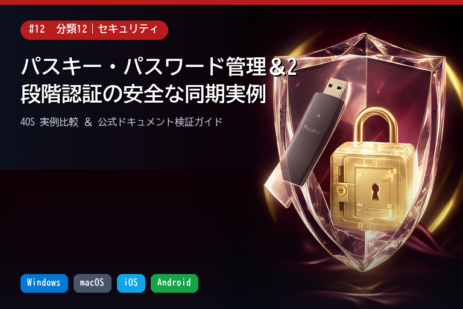

#12｜分類12: セキュリティ・プライバシー対策 2026-11-23

パスキー・パスワード管理＆2段階認証の安全な同期実例｜Windows・macOS・iOS・Android
「パスワードを忘れてログインできない」「機種変更のたびに、すべてのサービスのパスキーや2段階認証の設定をやり直すのが面倒……」そんな悩みをお持ちではありませんか？
近年のセキュリティ技術の進化により、従来の「複雑なパスワードを覚える」という手法から、指紋や顔認証で安全にログインする「パスキー（Passkey）」への移行が急速に進んでいます。しかし、Windows、Mac、iPhone、Androidといった異なるOS間では、パスキーの同期ルールや仕様が微妙に異なります。
この記事では、主要4OSにおけるパスキー・パスワード管理の標準的な挙動を徹底比較し、機種変更時やデバイスを跨ぐ際に「詰まらない」ための実践的な設定手順を解説します。
4OS比較早見表
| 機能・項目 | Windows 11 | macOS / iOS | Android |
|---|---|---|---|
| 主要な認証基盤 | Windows Hello | iCloud キーチェーン | Google アカウント |
| パスキーの同期範囲 | 基本はローカル（PC単体） | Appleデバイス間（自動同期） | Googleアカウント経由（Android間） |
| 推奨ブラウザ | Microsoft Edge | Safari / Chrome | Chrome |
| クロスプラットフォーム連携 | パスワード管理ツールを推奨 | Webブラウザ経由での利用 | Googleアカウント経由の同期 |
| 前提条件 | Windows 11 (23H2以降) | macOS Ventura / iOS 16.4以降 | Android 9 以上 |
1. Windows 11 での実例手順
Windows環境では、パスキーは「Windows Hello」という生体認証・PIN認証の仕組みと密接に連携します。
【設定手順】
1. アカウント確認: 設定 > アカウント > オプションのサインイン を開き、Microsoft アカウントが正しく紐付けされ、Windows Hello（顔認証や指紋認証）が有効になっているか確認します。
2. ブラウザでの動作: Microsoft Edgeを使用する場合、Webサイトでパスキーを求められた際に「Windows Hello」のポップアップが表示されます。ここで指紋やPINを入力することでログインが完了します。
【重要な制限事項】
Windowsのパスキーは基本的に「そのPC本体に紐付いたもの」として管理されます。そのため、Windowsで作成したパスキーをMacやiPhoneへ自動的に同期する標準機能はありません。 複数のOSを跨いでパスキーを利用したい場合は、後述する外部のパスワード管理ツールを活用するのが現在の標準的な解決策です。
2. macOS での実例手順
Appleのエコシステムでは、「iCloud キーチェーン」が強力なハブとして機能します。
【設定手順】
1. Face ID / Touch IDの確認: 設定 > [ユーザー名] > パスコードと Touch ID/Face ID で、生体認証が有効であることを確認します。
2. iCloud同期の有効化: 同じく 設定 > [ユーザー名] > iCloud 内で「パスワードとキーチェーン」をオンにします。
3. ブラウザでの動作: SafariやChrome（iCloud連携時）でログインする際、iPhoneやiPadと同じ感覚でFace IDによる認証が行われます。
【重要な制限事項】
iCloud キーチェーンによりMacとiPhoneの間ではパスキーがシームレスに同期されますが、WindowsやAndroidからこの情報を直接引き継ぐ標準機能はありません。 他のOSからアクセスする場合は、Webブラウザ経由でのログインとなります。
3. iOS（iPhone / iPad）での実例手順
iOSデバイスは、Appleエコシステムの一部として動作するため、設定は非常にシンプルです。
【設定手順】
1. 生体認証の確認: 設定 > Face ID / Touch ID で登録を確認します。
2. 自動入力の設定: 設定 > パスワード を開き、「パスワードの自動入力」が「iCloud パスワード」になっていることを確認します。
【Androidとの差異】
iPhoneで作成したパスキーをAndroidで使うことは、標準機能のみでは困難です。クロスプラットフォームでの利用を前提とする場合は、後述するGoogleアカウント連携や外部ツールを検討する必要があります。
4. Android での実例手順
Androidでは「Google アカウント」が同期の基盤となります。
【設定手順】
1. Googleアカウントの確認: 設定 > [ユーザー名] > セキュリティとプライバシー（機種により異なります）から、パスキーの設定を確認します。
2. メーカー固有の挙動: Samsung Galaxyなどの機種では、設定 > アカウントとバックアップ 内に独自の同期メニューが存在する場合があります。基本的にはGoogleアカウントにログインしていれば、機種変更時も再登録の手間を最小限に抑えられます。
【重要な制限事項】
Androidデバイス間でのパスキー共有はGoogleアカウント経由で行われますが、WindowsやMacのローカル環境から直接同期する標準機能はありません。
よくあるトラブルと解決チェックリスト
運用中に遭遇しやすいエラーと、その対処法をまとめました。
トラブル①：「パスキーが保存されていない」というエラー
- 現象: ブラウザで指紋認証を試みるが、反応がない、または「保存されていません」と表示される。
- 原因: OSの暗号化キーチェーン設定の不備、またはブラウザ拡張機能の競合。
- 解決策:
- Windows:
設定>プライバシーとセキュリティ>Windows Helloで生体認証を一度再登録してください。 - macOS/iOS: 「キーチェーンアクセス」アプリを開き、「すべてのアカウントのパスワードを表示する」が有効（パスコード入力が必要）になっているか確認してください。
- Windows:
トラブル②：機種変更後のログインエラー「このデバイスでは利用できません」
- 現象: 新しいスマホやPCで、以前のパスキーを認識しない。
- 原因: パスキーはハードウェア固有のIDに紐付いているため、OS再インストールや新規購入時は自動同期されません。
- 解決策:
- 各サービスの「セキュリティ設定」画面へアクセスし、古いデバイスのパスキーを削除します。その後、新機種で指紋認証等を用いて再度パスキーを登録する手順が必要です。
トラブル③：2段階認証コードの入力ミスによるロック
- 現象: パスワードは合っているが、SMSやアプリのコードが通らずログインできない。
- 原因: 通信環境の不安定、またはバックアップコードの期限切れ。
- 解決策:
- Googleアカウント等の設定画面から、あらかじめ「バックアップコード」を発行し、オフラインでも使える場所に保管しておきましょう。認証失敗時はこのコードを入力することで突破可能です。
トラブル④：ブラウザ間のパスワード同期が失敗する
- 現象: Chromeで保存したものがEdgeやSafariに反映されない。
- 原因: ブラウザごとの「アカウント連携」設定の不一致。
- 解決策:
- Chrome:
設定>パスワードと自動入力でGoogleアカウントを再選択し、「すべてのデータを取り込む」を実行します。 - Edge: Windows環境ではMicrosoft Edgeの同期機能を有効にし、Microsoftアカウントとの連携を優先的に確認してください。
- Chrome:
まとめ：快適なマルチOS環境を作るポイント
パスキーは非常に強力なセキュリティ手段ですが、今回解説した通り「OSやメーカーの壁」によって同期範囲に制限があるのが現状です。快適で安全なマルチOS環境を構築するためのポイントは以下の3点です。
- アカウント連携の徹底: 各デバイスでMicrosoft、Apple、Googleのアカウントが正しくログイン・同期されているか定期的に確認しましょう。
- バックアップ策の確保: 標準機能のみに頼らず、Bitwardenなどのパスワード管理ツールを導入することで、OSを跨いだパスワード情報の共有が容易になります。また、Google等の「バックアップコード」は必ず手元に保管してください。
- 多重防御の検討: より高度なセキュリティを求めるなら、YubiKeyなどの物理的なFIDO2セキュリティキーを導入するのも有効です。また、VPNやセキュリティソフトはパスキーそのものを保護するものではありませんが、ネットワーク全体の安全性を高めるために併用することをお勧めします。
「便利さ」と「安全性」のバランスを取りながら、自分にとって最適な認証環境を整えていきましょう。
参考文献・公式ドキュメント（一次情報ソース）
本記事の手順・仕様は以下の各OSおよびツールの公式ドキュメントに基づいています。OSアップデートによりメニュー名称や挙動が変わる場合があるため、最新仕様の確認にもご活用ください。
- [Windows] Windows のパスキー（Passkey）公式ガイド - Microsoft サポート
- [macOS / iOS] パスキーのセキュリティについて - Apple サポート (日本)
- [Android / 共通] パスワードの代わりにパスキーでログインする - Google アカウント ヘルプ
- [共通] 2 段階認証プロセスを有効にする - Google アカウント ヘルプ